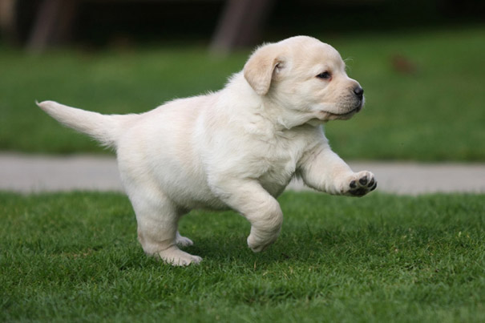

| Название породы: | Лабрадор-ретривер |
| Страна происхождения: | Канада |
| Время зарождения породы: | 19 век |
| Тип: | собака-компаньон |
| Вес: | 26 - 40 кг |
| Рост (высота в холке): | 55 - 57 см |
| Продолжительность жизни: | 10 - 13 лет |
| Цена щенков лабрадора: | 200 - 1250 $ |
Лабрадор-ретривер выведен как рабочая собака с дружелюбным характером. Изначально эти животные были незаменимыми помощниками рыбаков. Они помогали перетаскивать рыболовные снасти, извлекать рыбу из холодных вод Северной Атлантики.
Лабрадор сегодня – это ласковая, добродушная собака, надежный помощник и друг. Эти питомцы – первые помощники для людей с ограниченными физическими возможностями. Они принимают активное участие в различных поисковых и спасательных операциях.
Лабрадор относится к собакам спортивных пород. Животное обладает хорошим характером. Питомец не требует чрезмерного ухода. Он энергичен и очень привязан к человеку. Лабрадор-ретривер отличается своей преданностью семье. Многие владельцы этих
собак сравнивают их с настоящими ангелами-хранителями.
Порода возникла на острове Ньюфаундленд, расположенном на северо-восточном побережье Канады. Сначала порода называлась «собака святого Джона». Лабрадоры оказывали помощь местным рыбакам в их промысле, как в море, так и на суше.
Современные лабрадоры уже не поддаются эксплуатации со стороны человека. Теперь эти питомцы – настоящие семейные любимцы, окруженные любовью и теплотой. Хотя, справедливости ради, отметим, что лабрадоры и сейчас с удовольствие помогают своему
хозяину – рыбаку.
Кроткий нрав лабрадора сделал его отличной собакой – терапевтом. Животные оказывают психотерапевтическую помощь в детских домах, домах престарелых, приютах. А вот острый ум сделал из лабрадора отличного поводыря и настоящего профессионала
по поиску и спасению людей. Популярен ретривер и среди охотников. Все благодаря острому обонянию, бесстрашному характеру и атлетическому телосложению животного.
По мнению собаководов, лабрадора нельзя использовать в качестве сторожевой собаки. С этой задачей они не справятся из-за своего дружелюбного настроения к человеку. Но вот в качестве собаки-компаньона ретривер просто несравним.
Хотя точная история происхождения лабрадора неизвестна, многие считают, что животное появилось в результате скрещивания собаки святого Джона с местными собаками. Удивительные способности лабрадора не остались не замеченными. Поэтому позже лабрадор-ретривер
появился в Англии на службе у членов монаршей семьи. Определение породы как лабрадора появилось в 1830 году. Это название стало заслугой английского графа Малмсберри.
Удивительно, что сейчас лабрадор-ретривер является одной из самых популярных пород собак в мире. А ведь еще в 1880-х годах эти собаки были практически истреблены на американском континенте. Порода исчезла так же и в самом Ньюфаундленде. Связано
это было с правительственными налоговыми ограничениями. Семье разрешалось содержать не более одной собаки, причем содержание собаки – самки облагалось налогом.
Однако породу удалось сохранить в Англии. В 1903 году клуб собаководов признал лабрадора-ретривера отдельной породой. В 1903 году Американский клуб собаководов последовал примеру Английского клуба, и также признал породу. В начале 20-х, средине
30-х годов прошлого века началось активное разведение породы в Америке. Особая популярность лабрадора-ретривера началась после Второй мировой Войны. Пика своей популярности порода достигла в 1991 году. Именно тогда лабрадор-ретривер был признан
самой популярной породой в США.
Лабрадор-ретриверы – это ласковые и верные собаки. Животное занимает первое место среди зарегистрированных Американским клубом собаководов пород. Лабрадоры полны энергии и всегда радушно встречают хозяина и членов семьи. Эта порода является непревзойденным примером настоящего «друга человека». Счастье переполняет этих собак, когда они находятся в кругу своей семьи. Они обожают бегать, плавать, играть с детьми любого возраста. Собаки этой породы – отличный выбор для начинающих собаководов. Владельцы этих ласковых собак единогласно утверждают о простоте в уходе и содержании лабрадоров. Это лишний раз подтверждает, что любой новичок, который готов уделять внимание собаке, может без опаски приобретать щенка лабрадор-ретривера.
В течение всего года лабрадоры сильно линяют. Регулярное вычесывание позволит предотвратить распространение шерсти по дому и поможет поддерживать шерсть в хорошем состоянии. У лабрадоров часто возникает неприятный «собачий» запах. Поэтому этих собак придется купать намного чаще, чем представителей других пород. Постоянно следите за ушами. Обращайте внимание на то, чтобы в них не образовывались признаки воспалений или раздражений. Обрабатывайте ушные раковины специальным раствором, назначенным ветеринаром. Избегайте использования ватного тампона. Для предотвращения возникновения зубного камня и неприятного запаха не забывайте еженедельно чистить лабрадор-ретриверу зубы
Лабрадоров очень легко дрессировать. Представители этой породы стараются во всем угождать своему хозяину. Поэтому при обучении не должно возникнуть особых проблем. Главное условие – начинать дрессировку нужно в раннем возрасте. Лабрадоры обожают играть, если они будут думать, что обучение – это увлекательная игра, то результат не заставит себя долго ждать. Лабрадоры достаточно быстро растут, вот почему обучение нужно начинать как можно раньше. После освоения базовых команд иногда непросто научить собаку более сложным командам. Все дело в том, что, несмотря на то, что физически лабрадоры растут быстро, в душе они остаются щенками еще очень долго. Как и всем детям, щенкам сложно выполнять трудные задания. Поэтому, только проявив терпение, вы добьетесь результата. Так что начинайте дрессировку в раннем возрасте и продолжайте до полного усвоения. Особых успехов лабрадор-ретриверы достигают в заданиях на послушание. А вот в аджилити эти собаки не так успешны, хотя они и любят физические нагрузки и активные образ жизни.
Средняя продолжительность жизни лабрадора составляет порядка 10-13 лет. Основные проблемы со здоровьем лабрадора включают: дисплазию локтевого сустава, аллергию, вывих коленной чашечки, сахарный диабет, меланому, заворот век, глаукому, катаракту, прогрессирующую атрофию сетчатки, ожирение, лимфому, проблемы с мочеточниками.